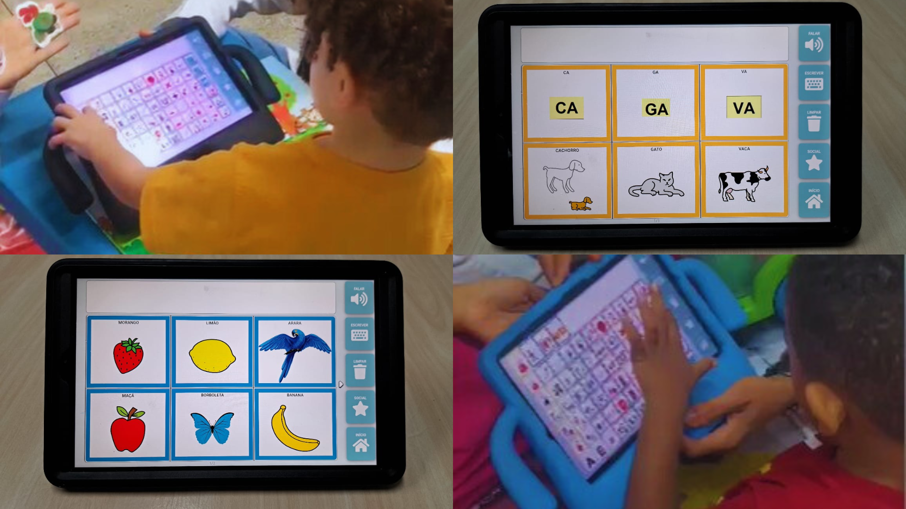

Autores: Pereira, J.; Nogueira, R.; Zanchettin, C.; Fidalgo, R.
Cambridge University Press, 2025.
Dando voz a quem tem muito a dizer.
O Assistive é um grupo de pesquisa do CIn-UFPE dedicado a criar tecnologias assistivas que transformam vidas. Desenvolvemos soluções de alto impacto, como a plataforma Reaact, para revolucionar a Comunicação Aumentativa e Alternativa (CAA).
Publicações
Nossas pesquisas são validadas e compartilhadas com a comunidade científica. Conheça alguns dos nossos principais artigos:
Sobre
O Assistive é um grupo de pesquisa do Centro de Informática (CIn) da UFPE, dedicado ao desenvolvimento de tecnologias assistivas de alto impacto social.
Nossa atuação concentra-se em pesquisa aplicada ao desenvolvimento de produtos inovadores voltados a pessoas neurodivergentes ou com necessidades complexas de comunicação, como autismo, síndrome de Down e paralisia cerebral.
Aliando pesquisa acadêmica relevante à aplicação prática, o grupo visa oferecer soluções que melhorem a qualidade de vida e promovam autonomia.

Destaques
Multiplataforma
Funciona em qualquer dispositivo (Windows, Android, iOS, Linux, MacOS).
Em nuvem
Não requer instalação e pode ser acessada de qualquer lugar com internet.
Intuitiva
De fácil uso para profissionais e usuários finais.
Modular
Composta por dois módulos principais: Editor e Comunicador.
Inovação
Nossa abordagem se destaca por ancorar o desenvolvimento de Tecnologia Assistiva nos alicerces teóricos da Ciência da Computação.
- Pioneirismo: O Reaact é uma das primeiras soluções de CAA do mundo a operar 100% em nuvem e ser verdadeiramente multiplataforma.
- Pesquisa Aplicada: Focamos em desafios computacionais complexos, como construção de vocabulários, recomendação de cartões e analytics de comunicação.
- Disseminação: Promovemos oficinas gratuitas para profissionais da saúde e educação, ampliando o alcance e o impacto da plataforma.

Liderança
Sob a liderança do Prof. Robson Fidalgo, pesquisador e professor do CIn-UFPE, o grupo conta com mais de uma década de dedicação ao desenvolvimento de pesquisas e produtos inovadores na área de tecnologia assistiva e inclusão digital.